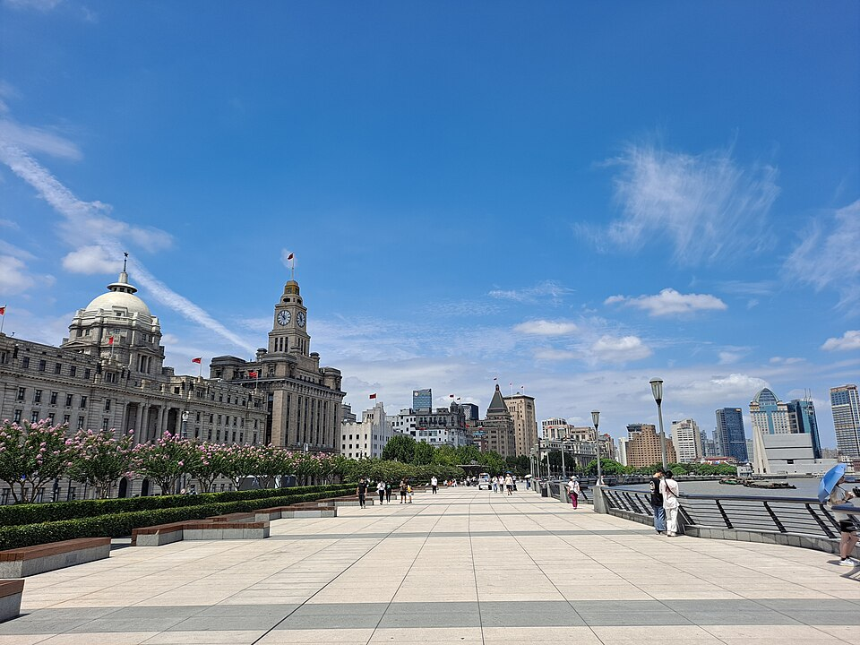
上海 Shanghai
中国 · 亚洲 · 外滩
作者：钉钉
N 31.2325° E 121.4692°；城市参考位置。原照片未改写，页面与视频以等比裁切展示。
120 座城市 · 75 个国家／地区标签 · 6 大洲。资料采集日期：2026 年 10 月 6 日。照片拍摄时间不等于采集日期，也不表示城市当前的实时景象。各文件分别遵循下列许可证，完整署名与原始说明可通过文件链接查看。
坐标是城市参考位置，不是照片拍摄点或机场位置。旅行短句为本项目原创；照片作者署名来自 Wikimedia Commons。环境音、矢量机窗与程序纹理为本项目原创，使用 MIT 许可。本站不包含参考视频的音轨或截取画面。

中国 · 亚洲 · 外滩
作者：钉钉
N 31.2325° E 121.4692°；城市参考位置。原照片未改写，页面与视频以等比裁切展示。
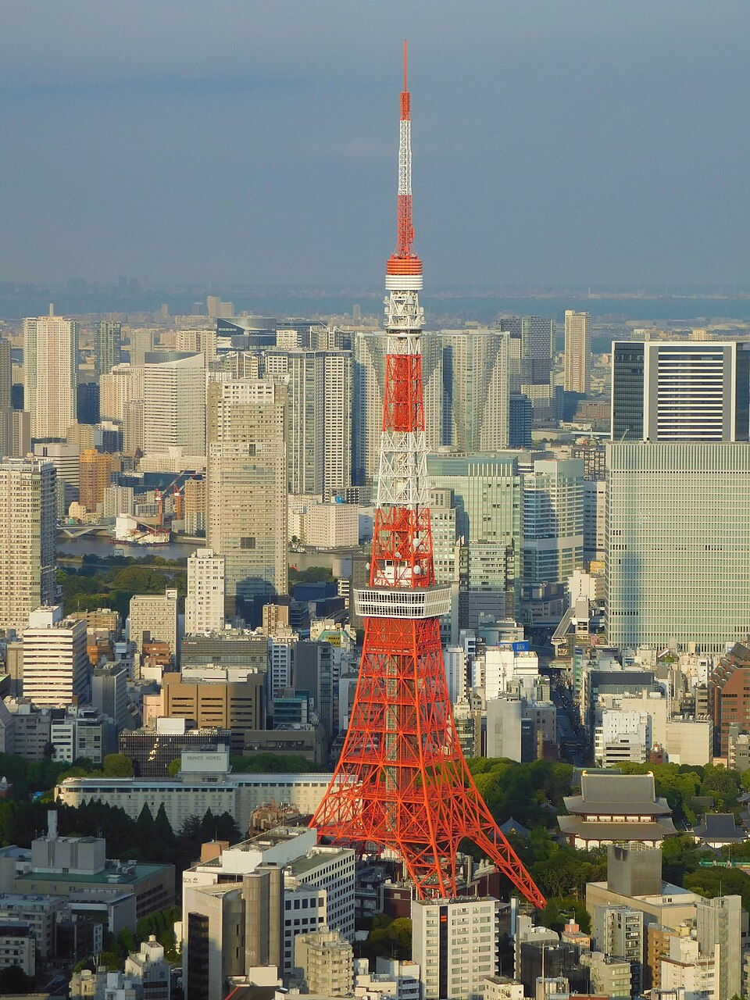
日本 · 亚洲 · 东京塔
作者：Akonnchiroll
Tokyo_Tower_2023.jpg · CC BY-SA 4.0
N 35.6897° E 139.6922°；城市参考位置。原照片未改写，页面与视频以等比裁切展示。
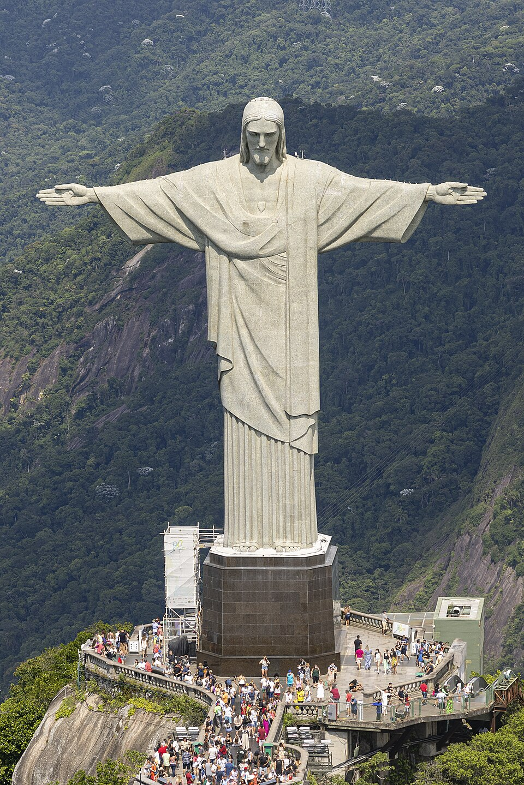
巴西 · 南美洲 · 基督像
作者：Arne Müseler
Christ_the_Redeemer_-_Cristo_Redentor.jpg · CC BY-SA 3.0 de
S 22.9111° W 43.2056°；城市参考位置。原照片未改写，页面与视频以等比裁切展示。
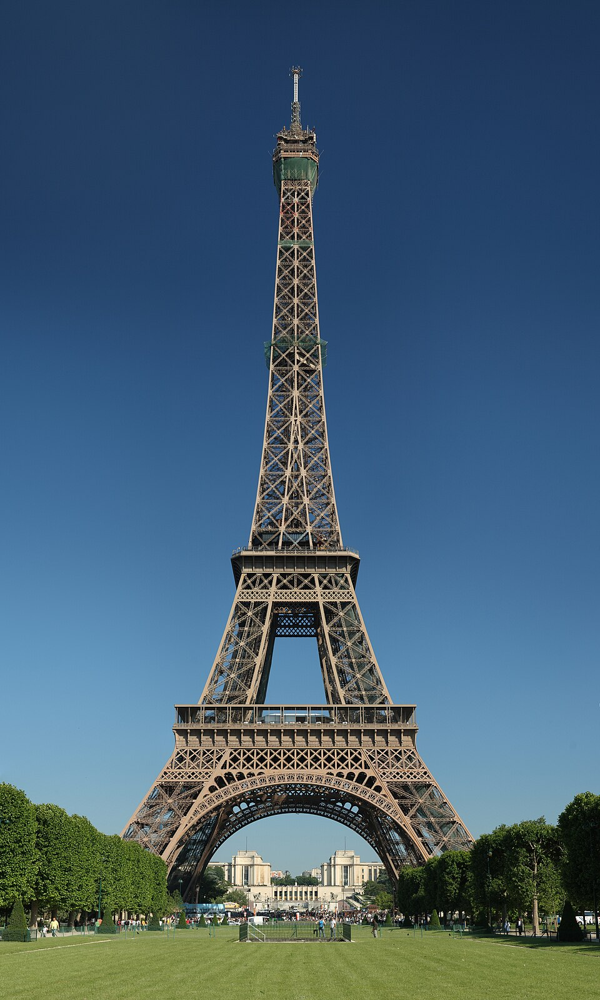
法国 · 欧洲 · 埃菲尔铁塔
作者：Benh LIEU SONG
Tour_Eiffel_Wikimedia_Commons_(cropped).jpg · Public domain
N 48.8567° E 2.3522°；城市参考位置。原照片未改写，页面与视频以等比裁切展示。
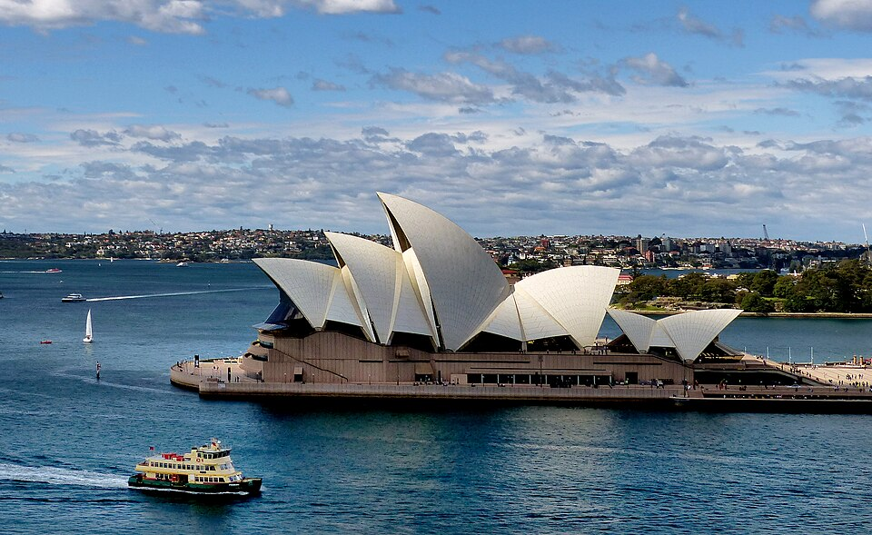
中国 · 亚洲 · 天坛
作者：Shujianyang
Temple_of_Heaven_20160323_01.jpg · CC BY-SA 4.0
N 39.9067° E 116.3975°；城市参考位置。原照片未改写，页面与视频以等比裁切展示。
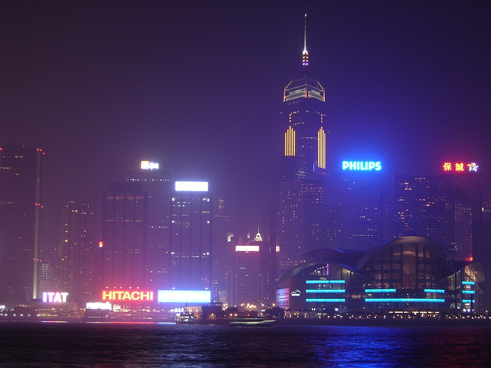
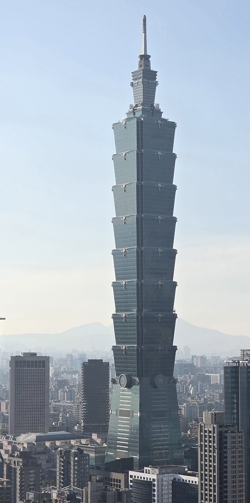
中国台湾 · 亚洲 · 台北101
作者：Sinsyuan
Taipei_101_from_Xiangshan_20260927_(cropped).jpg · CC BY-SA 4.0
N 25.0375° E 121.5625°；城市参考位置。原照片未改写，页面与视频以等比裁切展示。

韩国 · 亚洲 · 南山首尔塔
作者：Rtflakfizer
Namsan_Tower_sunset,_Seoul.jpg · CC BY-SA 4.0
N 37.5600° E 126.9900°；城市参考位置。原照片未改写，页面与视频以等比裁切展示。
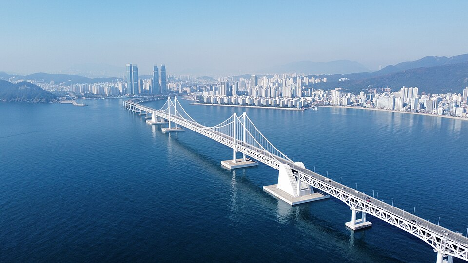
韩国 · 亚洲 · 广安大桥
作者：Glabb
Gwangan_Bridge1.jpg · Public domain
N 35.1800° E 129.0750°；城市参考位置。原照片未改写，页面与视频以等比裁切展示。
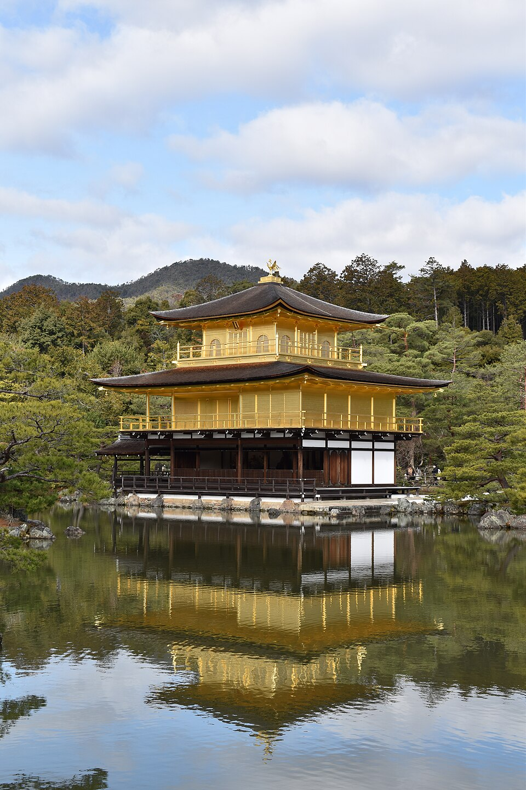
日本 · 亚洲 · 金阁寺
作者：Nacaru
Golden_Pavilion_Kinkaku-ji_water_mirror_2024.jpg · CC BY-SA 4.0
N 35.0116° E 135.7681°；城市参考位置。原照片未改写，页面与视频以等比裁切展示。
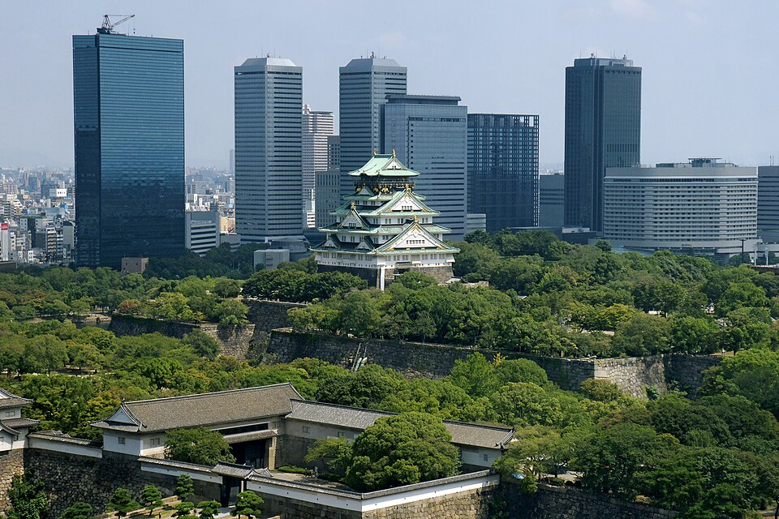
日本 · 亚洲 · 大阪城
作者：663highland
Osaka_Castle_03bs3200.jpg · CC BY 2.5
N 34.6939° E 135.5022°；城市参考位置。原照片未改写，页面与视频以等比裁切展示。
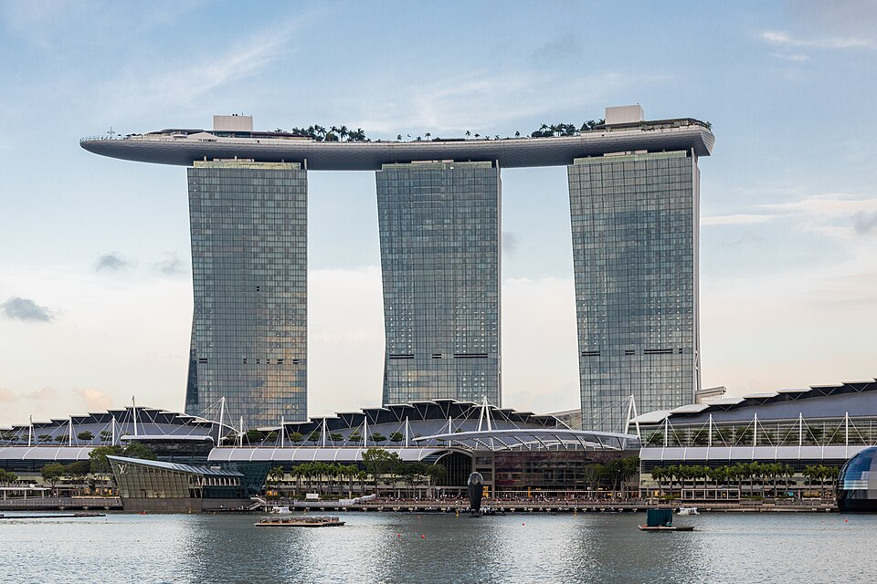
新加坡 · 亚洲 · 滨海湾金沙
作者：Supanut Arunoprayote
Marina_Bay_Sands_(I).jpg · CC BY 4.0
N 1.2833° E 103.8333°；城市参考位置。原照片未改写，页面与视频以等比裁切展示。
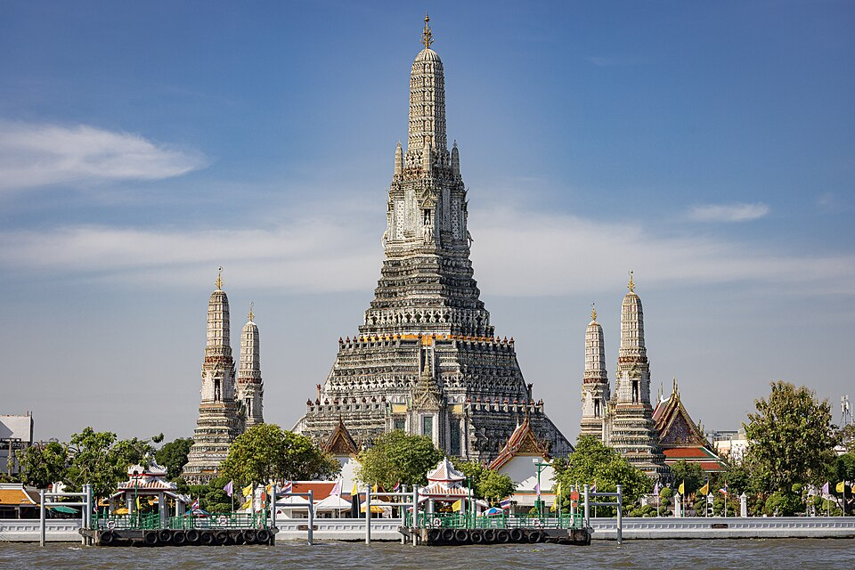
泰国 · 亚洲 · 郑王庙
作者：Mastertongapollo
เจดีย์ประธานทรงปรางค์วัดอรุณ2.jpg · CC BY-SA 4.0
N 13.7525° E 100.4942°；城市参考位置。原照片未改写，页面与视频以等比裁切展示。
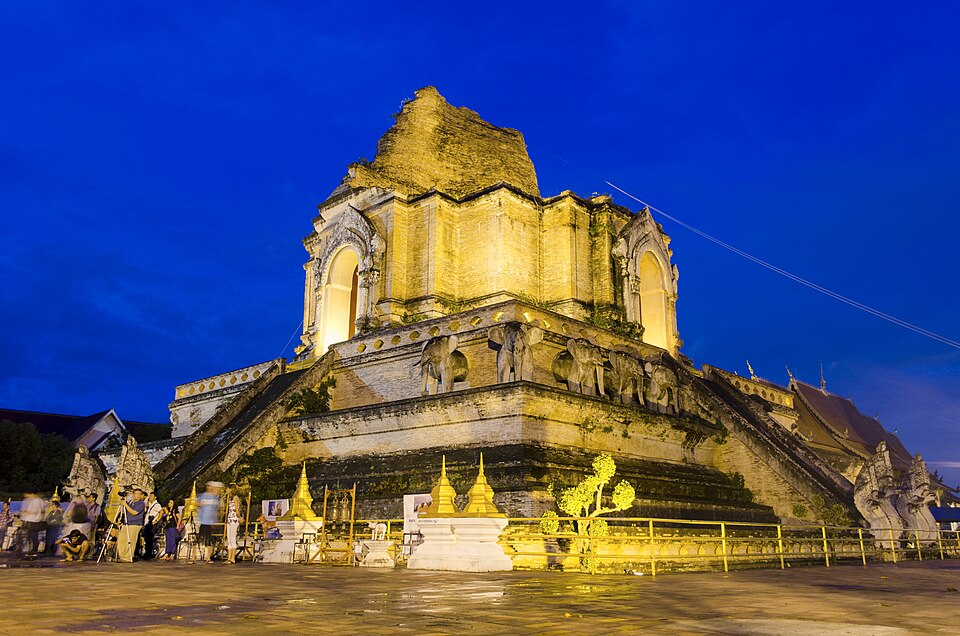
泰国 · 亚洲 · 契迪龙寺
作者：Kingkidton
N 18.7953° E 98.9986°；城市参考位置。原照片未改写，页面与视频以等比裁切展示。
越南 · 亚洲 · 还剑湖
作者：Cyril Doussin from London, United Kingdom
N 21.0000° E 105.8500°；城市参考位置。原照片未改写，页面与视频以等比裁切展示。
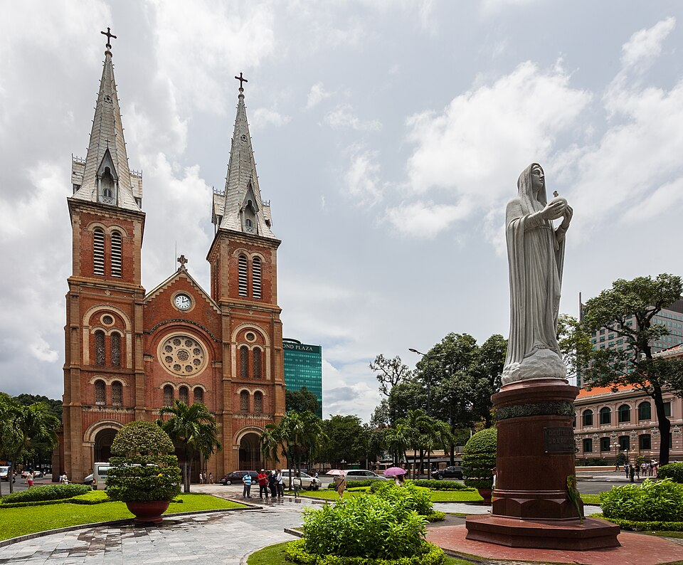
越南 · 亚洲 · 西贡圣母大教堂
作者：Diego Delso
Basílica_de_Nuestra_Señora,_Ciudad_Ho_Chi_Minh,_Vietnam,_2013-08-14,_DD_03.JPG · CC BY-SA 3.0
N 10.7756° E 106.7019°；城市参考位置。原照片未改写，页面与视频以等比裁切展示。
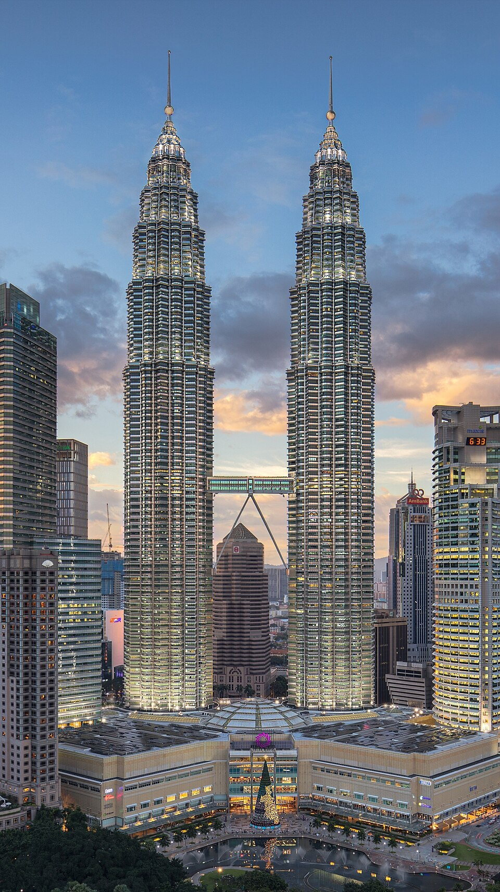
马来西亚 · 亚洲 · 双子塔
作者：James Kerwin from Tbilisi
The_Twins_SE_Asia_2019_(49171985716)_(cropped)_2.jpg · CC BY 2.0
N 3.1478° E 101.6953°；城市参考位置。原照片未改写，页面与视频以等比裁切展示。
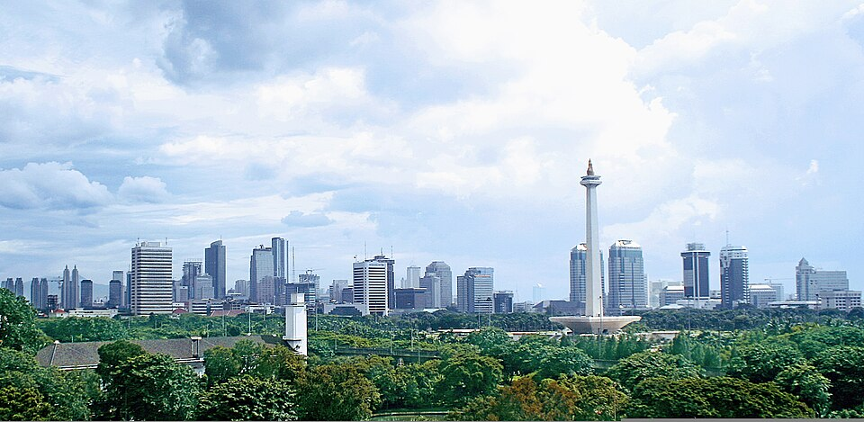
印度尼西亚 · 亚洲 · 国家纪念碑
作者：Gunawan Kartapranata
Jakarta_Panorama.jpg · CC BY-SA 3.0
S 6.1800° E 106.8300°；城市参考位置。原照片未改写，页面与视频以等比裁切展示。
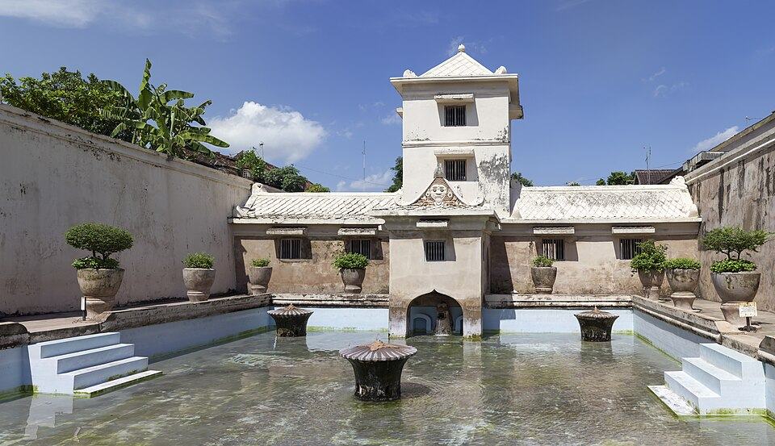
印度尼西亚 · 亚洲 · 水宫
作者：Crisco 1492
Tower_in_Taman_Sari,_2014-05-19.jpg · CC BY-SA 3.0
S 7.8014° E 110.3644°；城市参考位置。原照片未改写，页面与视频以等比裁切展示。
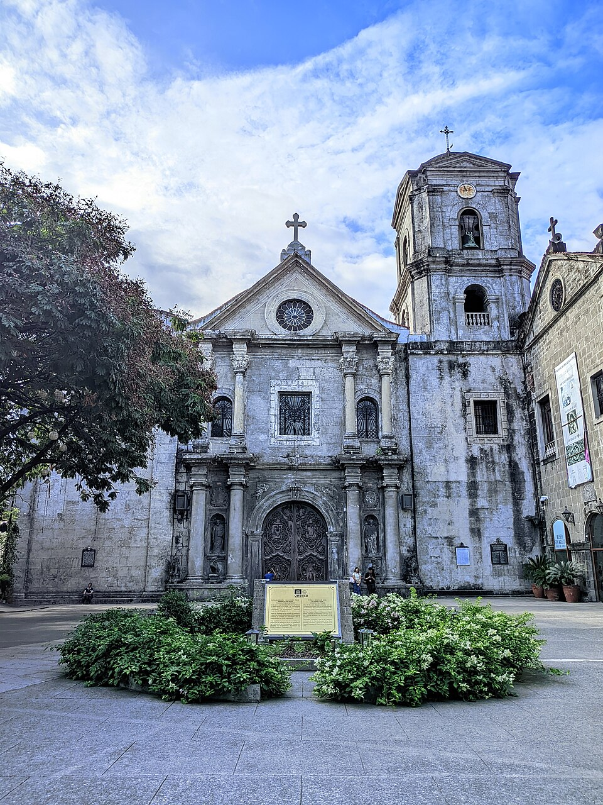
菲律宾 · 亚洲 · 圣奥古斯丁教堂
作者：Johngaje92
San_Agustin_Church,_Intramuros,_Manila_City.jpg · CC BY-SA 4.0
N 14.5958° E 120.9772°；城市参考位置。原照片未改写，页面与视频以等比裁切展示。
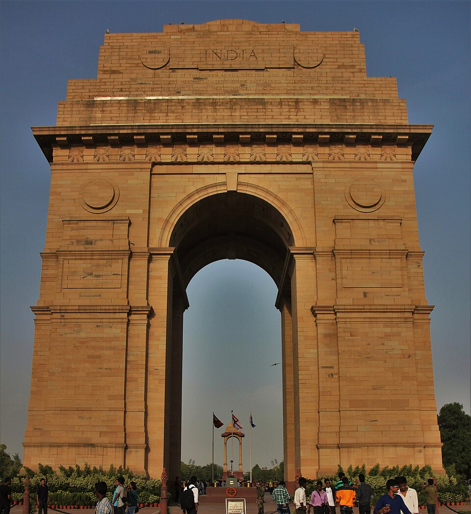
印度 · 亚洲 · 印度门
作者：AKS.9955
India_Gate_front.jpg · CC BY-SA 4.0
N 28.6100° E 77.2300°；城市参考位置。原照片未改写，页面与视频以等比裁切展示。
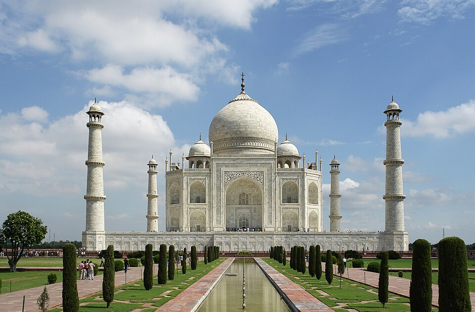
印度 · 亚洲 · 泰姬陵
作者：Yann; edited by Jim Carter
Taj_Mahal_(Edited).jpeg · CC BY-SA 4.0
N 27.1800° E 78.0200°；城市参考位置。原照片未改写，页面与视频以等比裁切展示。
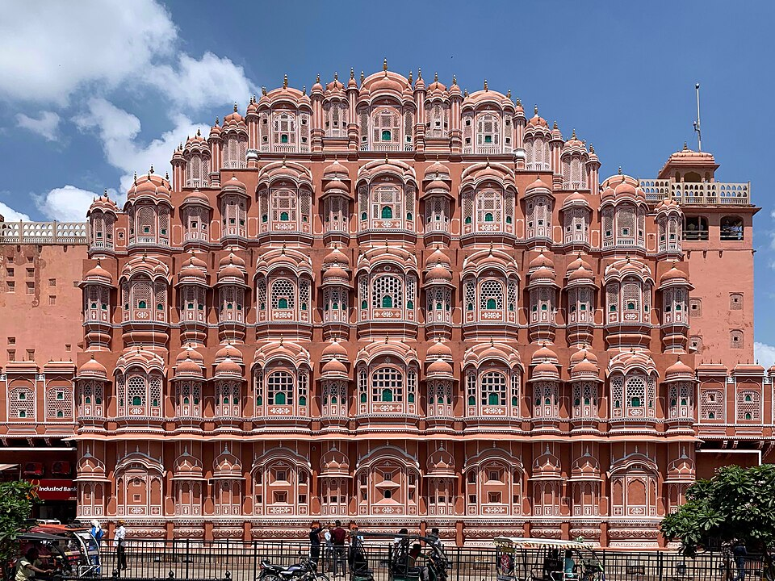
印度 · 亚洲 · 风之宫
作者：Chainwit.
East_facade_Hawa_Mahal_Jaipur_from_ground_level_(July_2022)_-_img_01.jpg · CC BY-SA 4.0
N 26.9150° E 75.8200°；城市参考位置。原照片未改写，页面与视频以等比裁切展示。
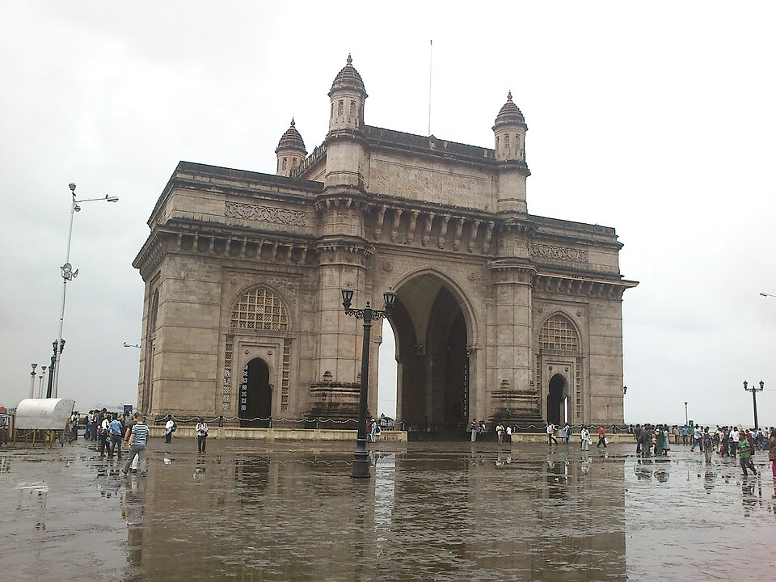
印度 · 亚洲 · 印度之门
作者：Ramkumar TD
Gateway_of_India_Mumbai_india.jpg · CC BY-SA 3.0
N 19.0761° E 72.8775°；城市参考位置。原照片未改写，页面与视频以等比裁切展示。
尼泊尔 · 亚洲 · 博达哈大佛塔
作者：Sumitbhatt222
Boudhanath_stupa_,_Kathmandu,_Nepal.jpg · CC BY-SA 4.0
N 27.7100° E 85.3200°；城市参考位置。原照片未改写，页面与视频以等比裁切展示。
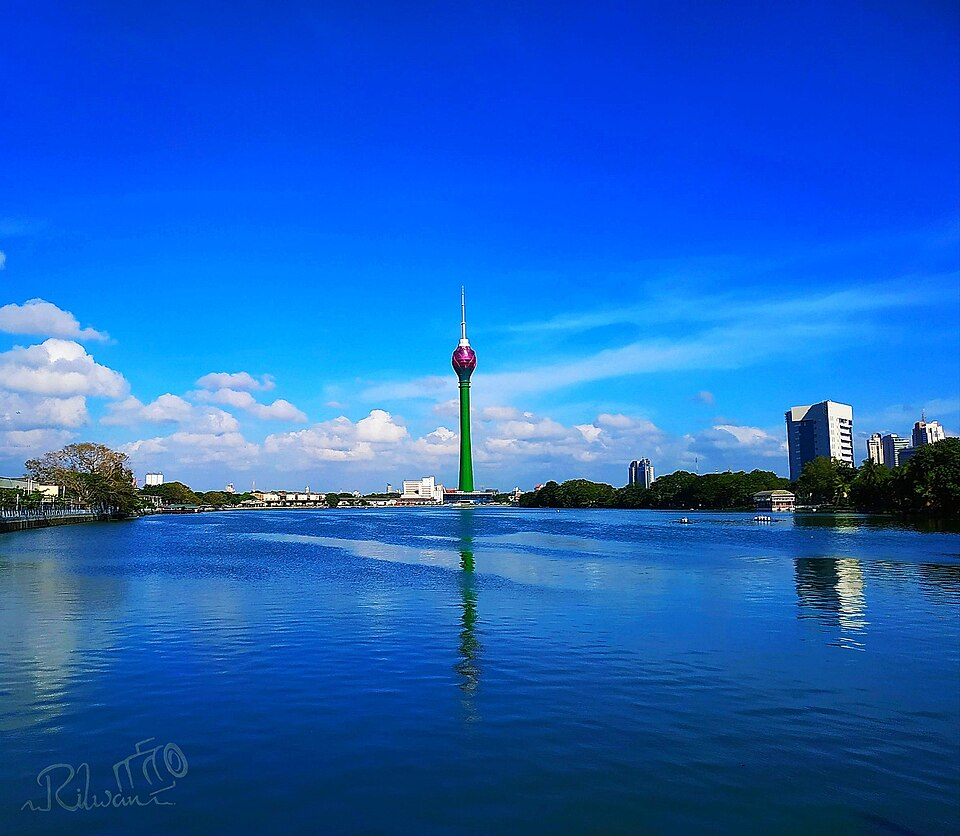
斯里兰卡 · 亚洲 · 莲花塔
作者：Mohamed Rilwan1210
Blue_lotus_tower.jpg · CC BY-SA 4.0
N 6.9344° E 79.8428°；城市参考位置。原照片未改写，页面与视频以等比裁切展示。
巴基斯坦 · 亚洲 · 费萨尔清真寺
作者：Ali Mujtaba
Ali_Mujtaba_WLM2017_FAISAL_MOSQUE_019.jpg · CC BY-SA 4.0
N 33.6931° E 73.0639°；城市参考位置。原照片未改写，页面与视频以等比裁切展示。
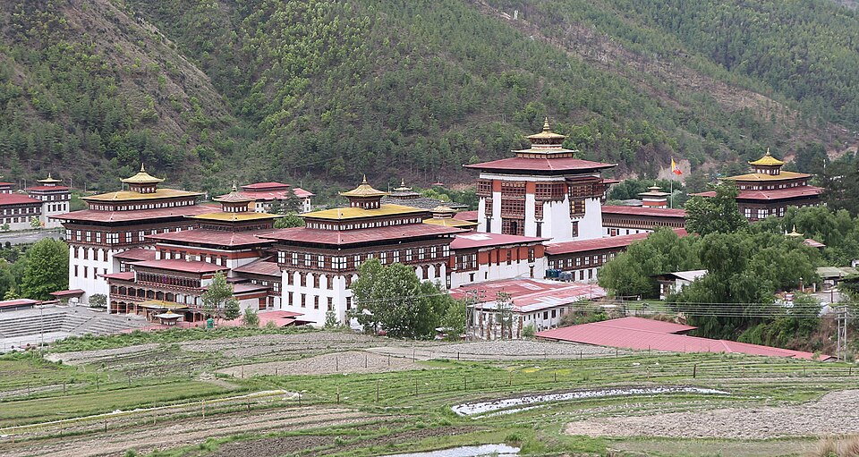
不丹 · 亚洲 · 扎西曲宗
作者：Bernard Gagnon
Tashichho_Dzong,_Bhutan_02.jpg · CC BY-SA 4.0
N 27.4722° E 89.6361°；城市参考位置。原照片未改写，页面与视频以等比裁切展示。

阿拉伯联合酋长国 · 亚洲 · 哈利法塔
作者：imran shahabuddin
Burj_Khalifa_(worlds_tallest_building)_and_the_Dubai_skyline_(25781049892).jpg · CC BY 2.0
N 25.2047° E 55.2708°；城市参考位置。原照片未改写，页面与视频以等比裁切展示。
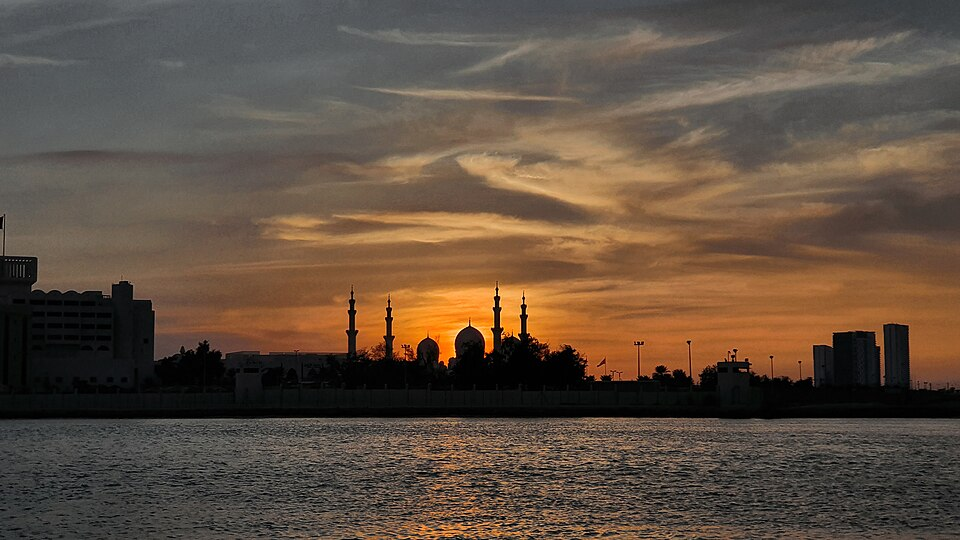
阿拉伯联合酋长国 · 亚洲 · 谢赫扎耶德大清真寺
作者：PotatoWitch
Sheikh_Zayed_Mosque_Silhouette.jpg · CC BY-SA 4.0
N 24.4667° E 54.3667°；城市参考位置。原照片未改写，页面与视频以等比裁切展示。
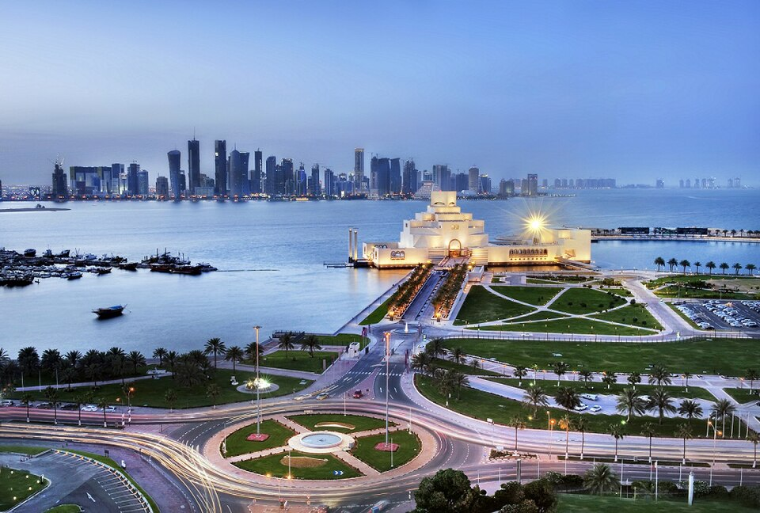
卡塔尔 · 亚洲 · 伊斯兰艺术博物馆
作者：Mohamod Fasil
IslamicArtMuseumDohaSkyline.jpg · CC BY 2.0
N 25.2867° E 51.5333°；城市参考位置。原照片未改写，页面与视频以等比裁切展示。
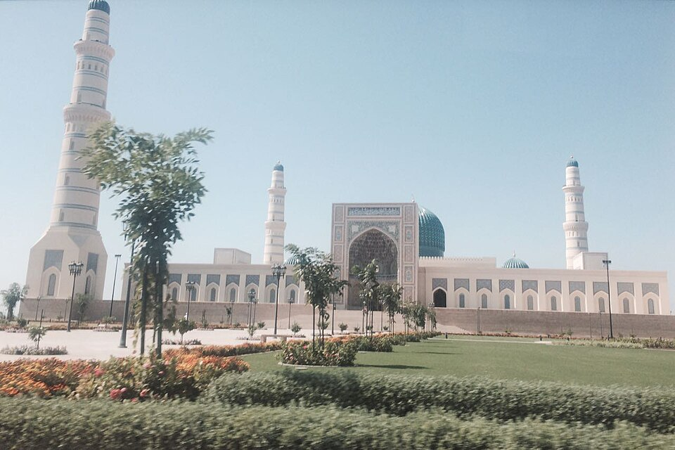
阿曼 · 亚洲 · 苏丹卡布斯大清真寺
作者：Meshal humaid Ali Almoqbali
واجهة_الجامع.jpg · CC BY-SA 4.0
N 23.5889° E 58.4083°；城市参考位置。原照片未改写，页面与视频以等比裁切展示。
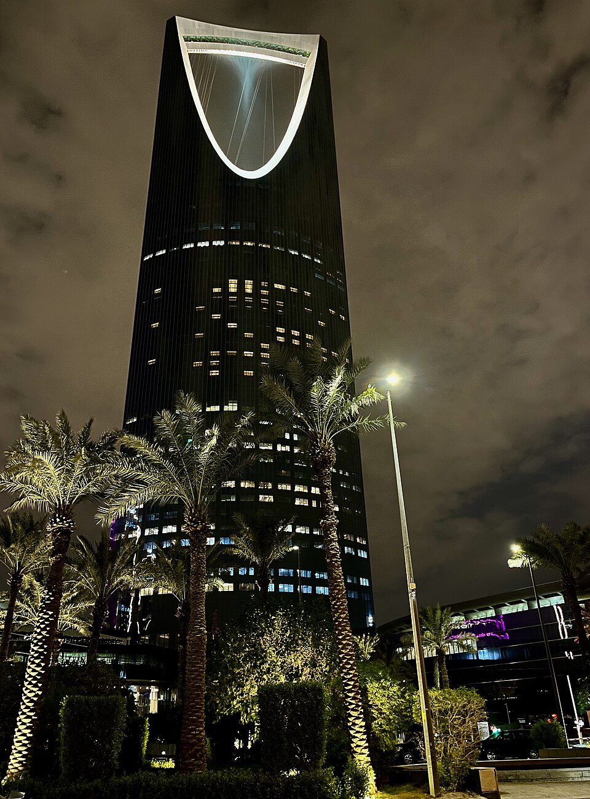
沙特阿拉伯 · 亚洲 · 王国中心
作者：Hamza A. Durrani
Kingdom_Centre_Riyadh_2024.jpeg · CC BY-SA 4.0
N 24.6333° E 46.7167°；城市参考位置。原照片未改写，页面与视频以等比裁切展示。
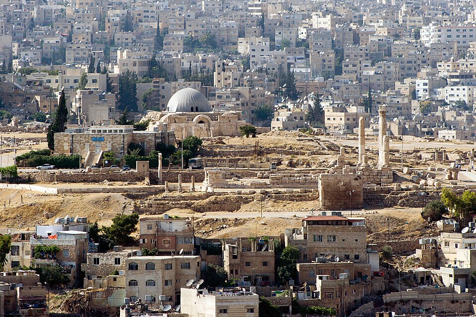
约旦 · 亚洲 · 安曼城堡山
作者：David Bjorgen
N 31.9497° E 35.9328°；城市参考位置。原照片未改写，页面与视频以等比裁切展示。
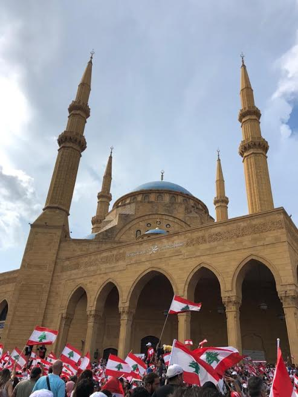
黎巴嫩 · 亚洲 · 穆罕默德阿明清真寺
作者：NicolasGaron
Mohammad_Al-Amin_Mosque_during_2019_Lebanese_revolution.jpg · CC BY-SA 4.0
N 33.8981° E 35.5058°；城市参考位置。原照片未改写，页面与视频以等比裁切展示。
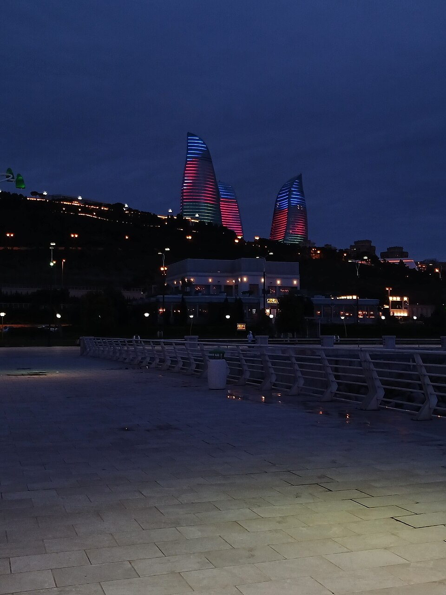
阿塞拜疆 · 亚洲 · 火焰塔
作者：Saidaa444
Flame_Towers.jpg · CC BY-SA 4.0
N 40.3756° E 49.8325°；城市参考位置。原照片未改写，页面与视频以等比裁切展示。
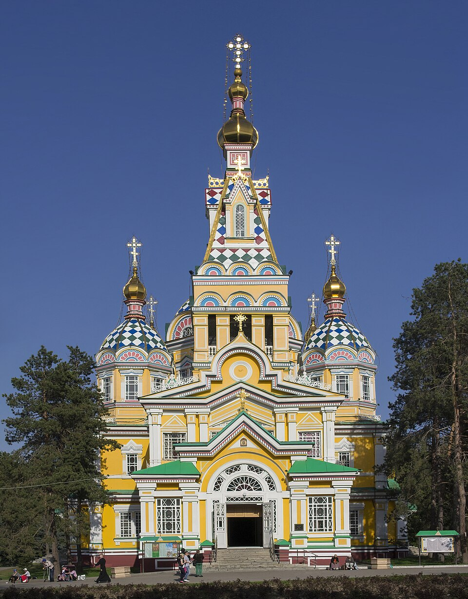
哈萨克斯坦 · 亚洲 · 升天大教堂
作者：Petar Milošević
Zenkov_cathedral.jpg · CC BY-SA 4.0
N 43.2333° E 76.9500°；城市参考位置。原照片未改写，页面与视频以等比裁切展示。
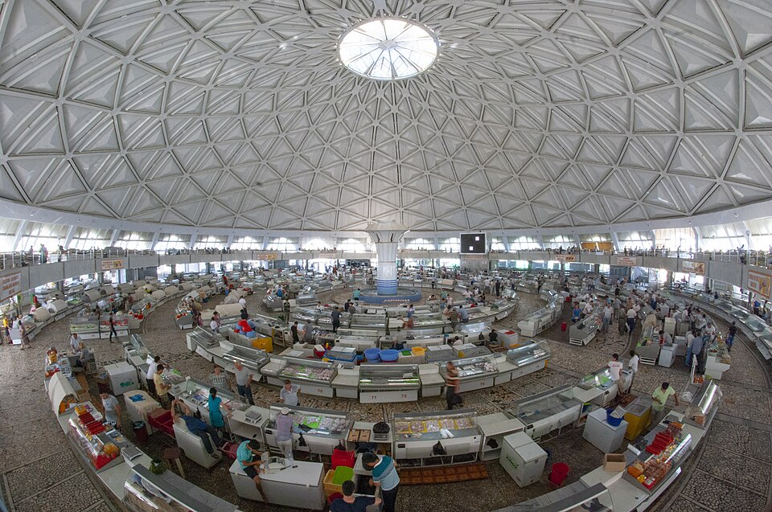
乌兹别克斯坦 · 亚洲 · 楚苏巴扎
作者：Theklan
Chorsu_Market_general_view.jpg · CC BY-SA 4.0
N 41.3111° E 69.2797°；城市参考位置。原照片未改写，页面与视频以等比裁切展示。
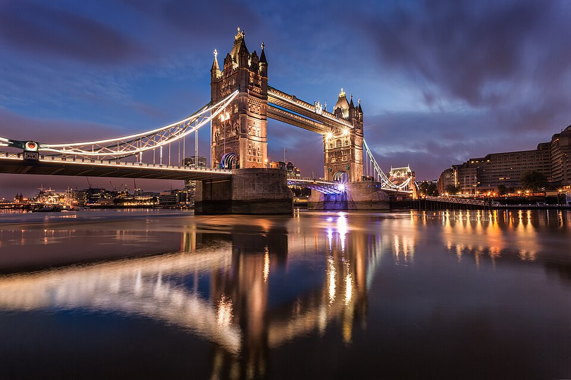
英国 · 欧洲 · 伦敦塔桥
作者：Fuzzypiggy
Tower_Bridge_at_Dawn.jpg · CC BY-SA 3.0
N 51.5072° W 0.1275°；城市参考位置。原照片未改写，页面与视频以等比裁切展示。
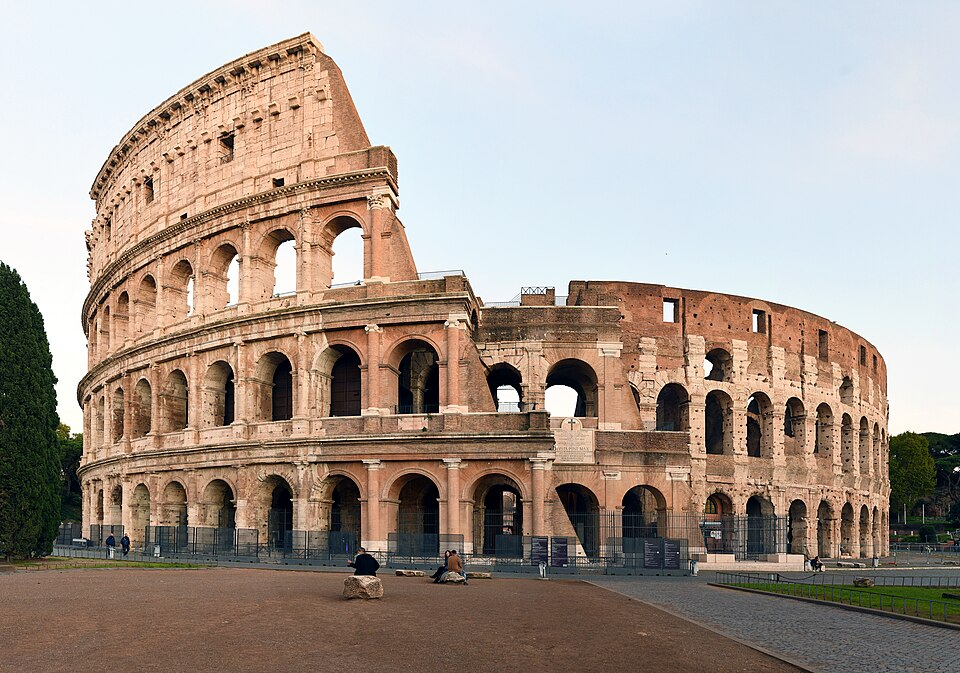
意大利 · 欧洲 · 斗兽场
作者：FeaturedPics
Colosseo_2020.jpg · CC BY-SA 4.0
N 41.8933° E 12.4828°；城市参考位置。原照片未改写，页面与视频以等比裁切展示。
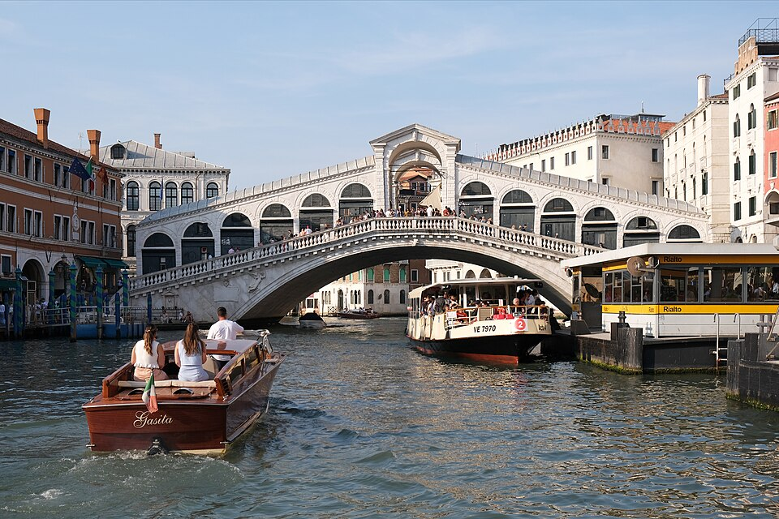
意大利 · 欧洲 · 里亚托桥
作者：kallerna
Rialto_2025_4.jpg · CC BY-SA 4.0
N 45.4375° E 12.3358°；城市参考位置。原照片未改写，页面与视频以等比裁切展示。
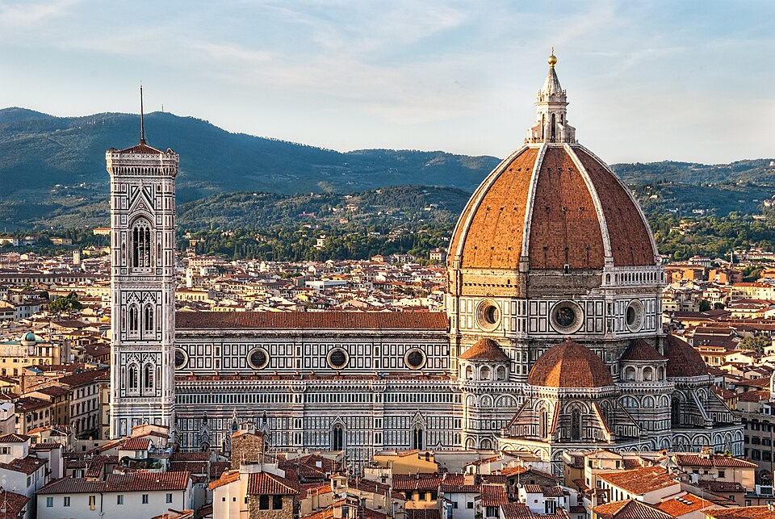
意大利 · 欧洲 · 圣母百花大教堂
作者：Gary Campbell-Hall
Cattedrale_di_Santa_Maria_del_Fiore_–_Il_Duomo_di_Firenze.jpg · CC BY 2.0
N 43.7714° E 11.2542°；城市参考位置。原照片未改写，页面与视频以等比裁切展示。
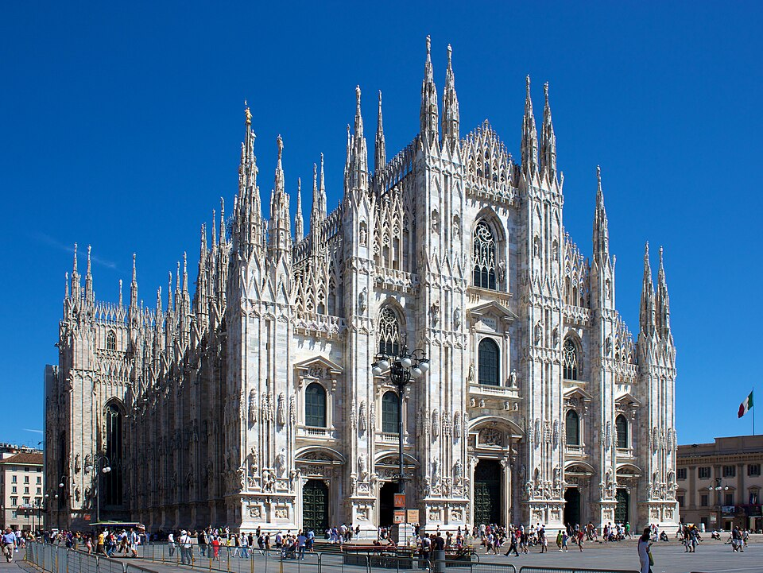
意大利 · 欧洲 · 米兰大教堂
作者：Jiuguang Wang
Milan_Cathedral_from_Piazza_del_Duomo.jpg · CC BY-SA 3.0
N 45.4669° E 9.1900°；城市参考位置。原照片未改写，页面与视频以等比裁切展示。
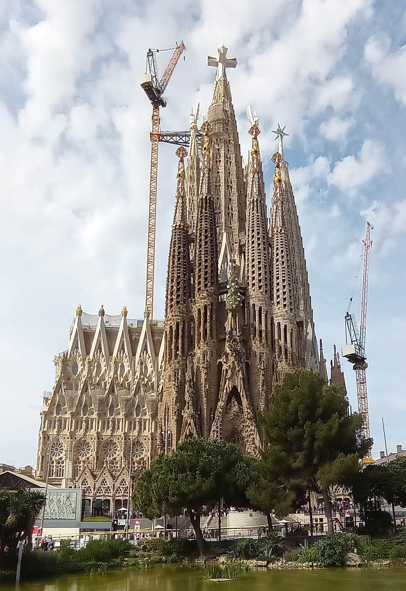
西班牙 · 欧洲 · 圣家堂
作者：Canaan
SF_maig_2_cropped.jpg · CC BY-SA 4.0
N 41.3833° E 2.1833°；城市参考位置。原照片未改写，页面与视频以等比裁切展示。
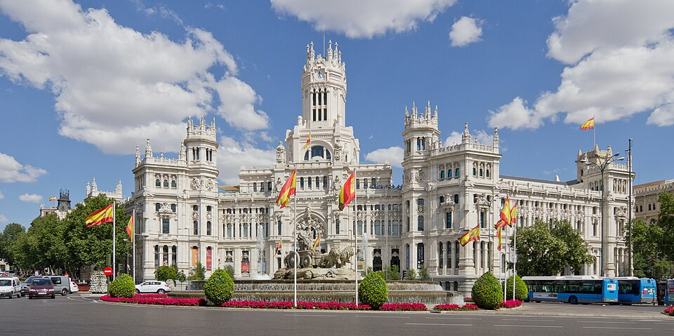
西班牙 · 欧洲 · 西贝莱斯宫
作者：Carlos Delgado
Palacio_de_Comunicaciones_-_47.jpg · CC BY-SA 3.0
N 40.4169° W 3.7033°；城市参考位置。原照片未改写，页面与视频以等比裁切展示。
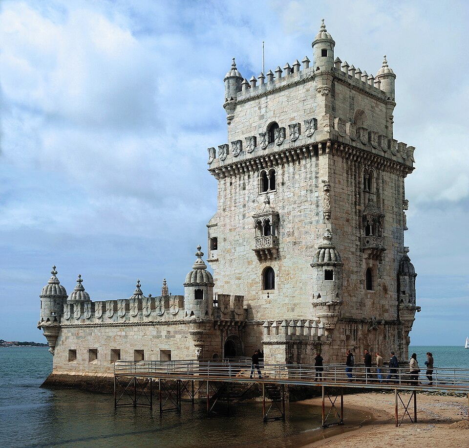
葡萄牙 · 欧洲 · 贝伦塔
作者：Alvesgaspar
Torre_Belém_April_2009-4a.jpg · CC BY-SA 3.0
N 38.7253° W 9.1500°；城市参考位置。原照片未改写，页面与视频以等比裁切展示。
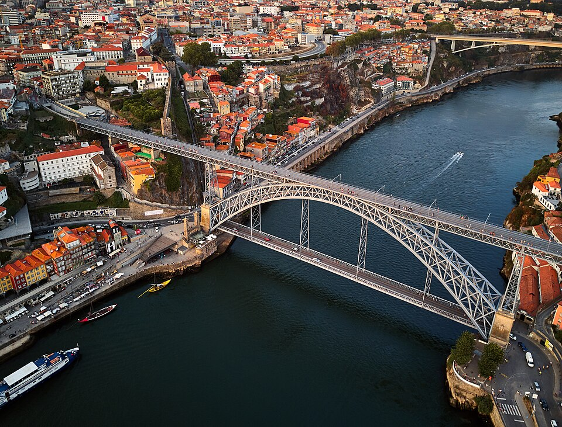
葡萄牙 · 欧洲 · 路易一世大桥
作者：Deensel
Dom_Luís_I_Bridge_(36961760686).jpg · CC BY 2.0
N 41.1500° W 8.6108°；城市参考位置。原照片未改写，页面与视频以等比裁切展示。
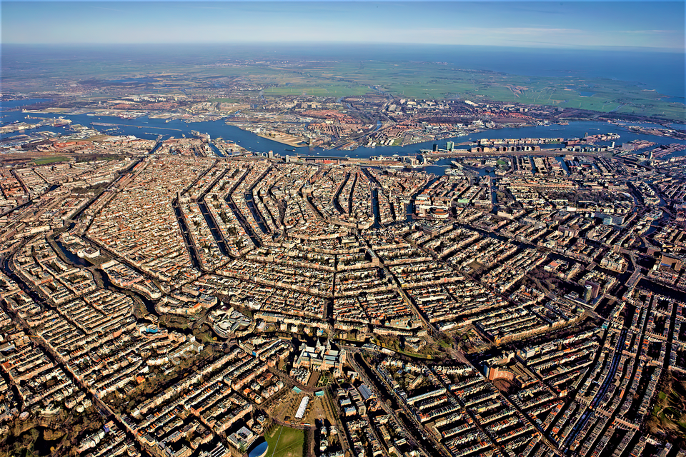
荷兰 · 欧洲 · 阿姆斯特丹运河
作者：Andrés Barrios
Imagen_de_los_canales_concéntricos_en_Ámsterdam.png · CC BY-SA 4.0
N 52.3728° E 4.8936°；城市参考位置。原照片未改写，页面与视频以等比裁切展示。
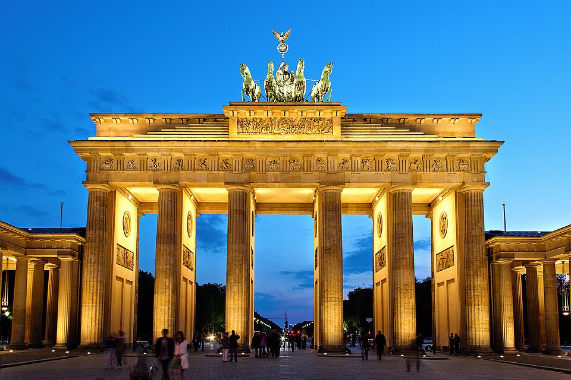
德国 · 欧洲 · 勃兰登堡门
作者：Thomas Wolf, www.foto-tw.de
Brandenburger_Tor_abends.jpg · CC BY-SA 3.0
N 52.5200° E 13.4050°；城市参考位置。原照片未改写，页面与视频以等比裁切展示。
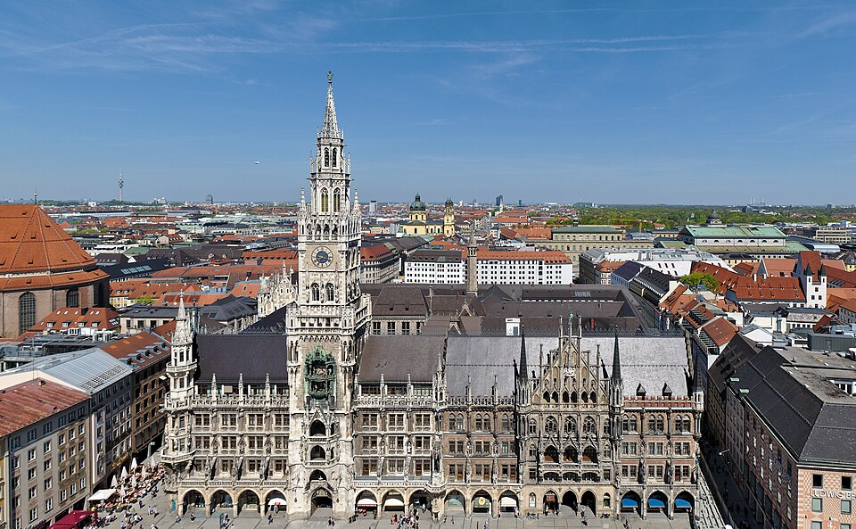
德国 · 欧洲 · 新市政厅
作者：Steffen Flor
Neues_Rathaus_München_2018.jpg · CC BY-SA 4.0
N 48.1375° E 11.5750°；城市参考位置。原照片未改写，页面与视频以等比裁切展示。
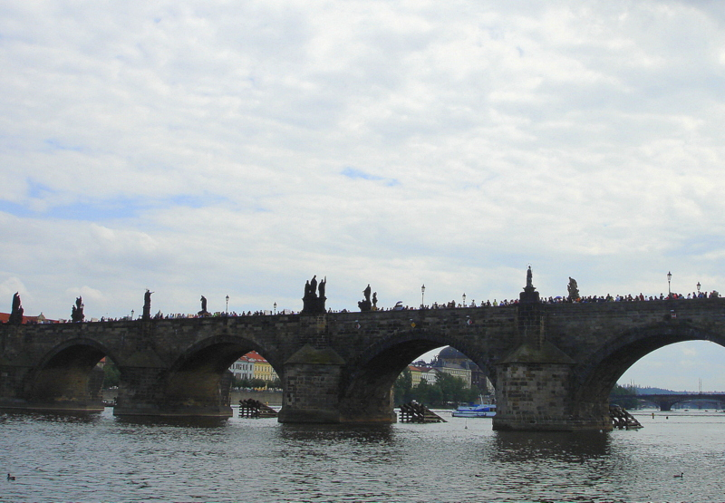
捷克 · 欧洲 · 查理大桥
作者：Aw58
Praha,_Karlův_most_DSC06743.JPG · CC BY-SA 3.0
N 50.0875° E 14.4214°；城市参考位置。原照片未改写，页面与视频以等比裁切展示。
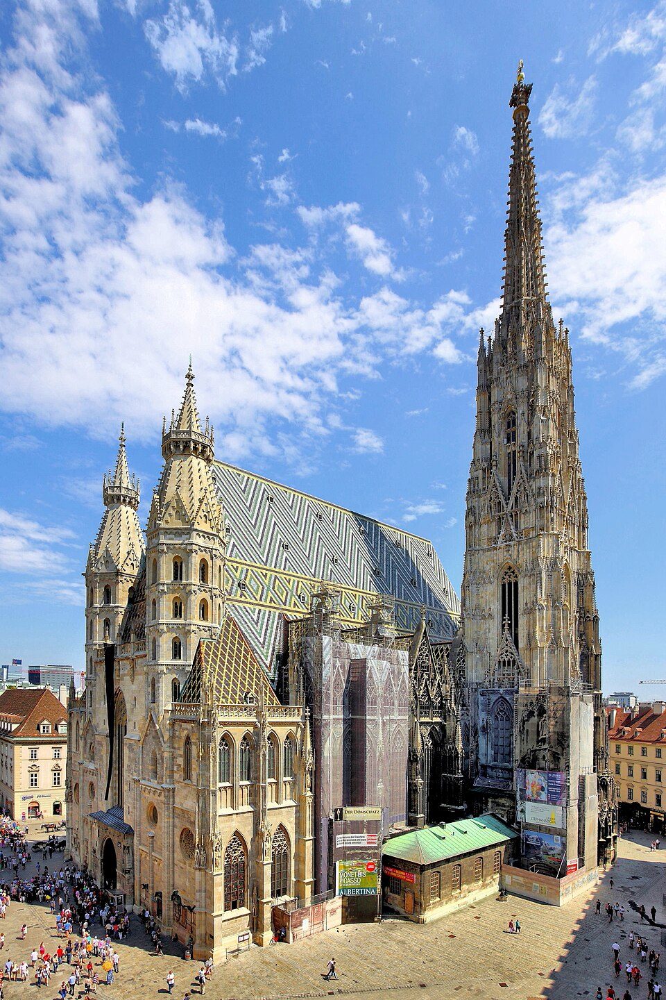
奥地利 · 欧洲 · 圣斯蒂芬大教堂
作者：C.Stadler/Bwag
Wien_-_Stephansdom_(1).JPG · CC BY-SA 4.0
N 48.2083° E 16.3725°；城市参考位置。原照片未改写，页面与视频以等比裁切展示。
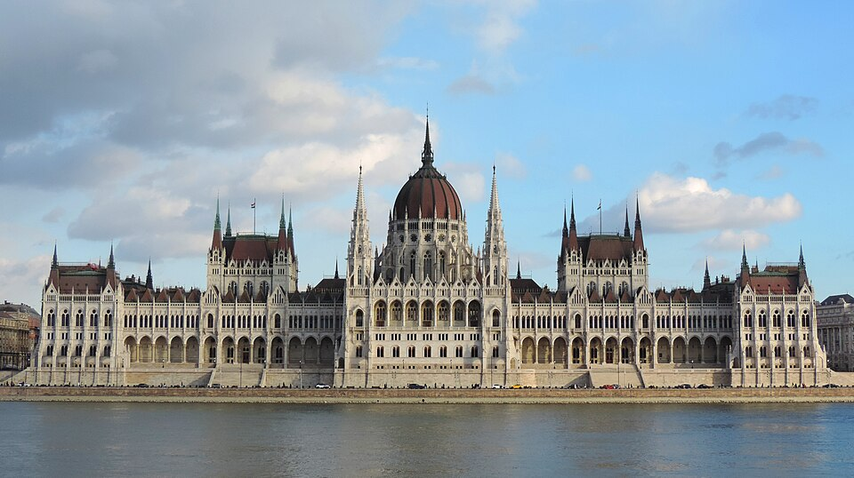
匈牙利 · 欧洲 · 匈牙利国会大厦
作者：Kilyann Le Hen
Hungarian_Parliament_Building_from_across_the_Danube,_2025-01-11.jpg · CC BY 4.0
N 47.4925° E 19.0514°；城市参考位置。原照片未改写，页面与视频以等比裁切展示。
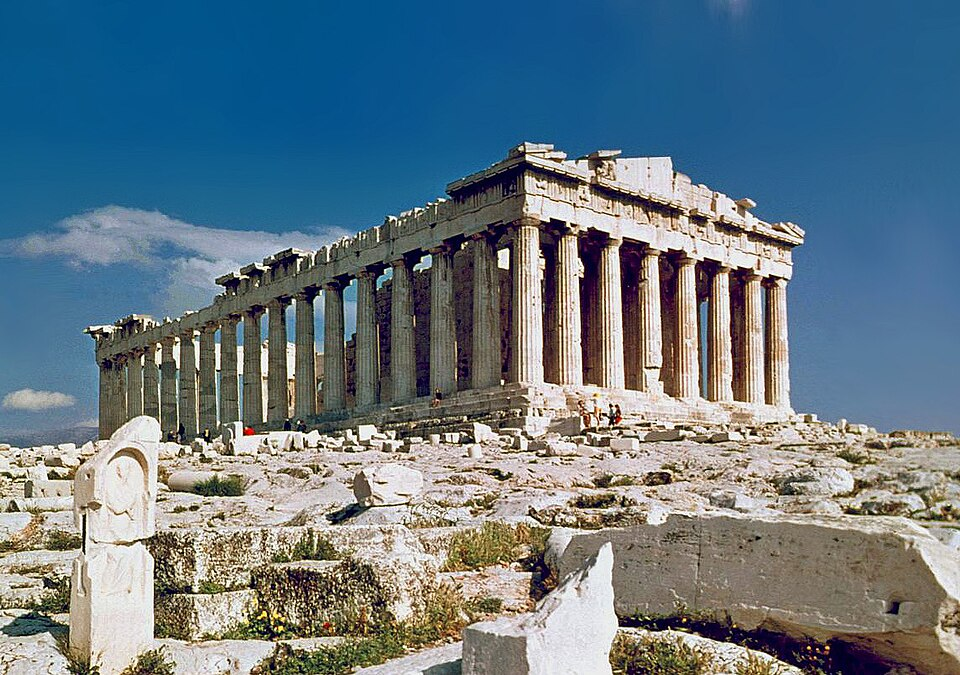
希腊 · 欧洲 · 帕特农神庙
作者：Steve Swayne
The_Parthenon_in_Athens.jpg · CC BY 2.0
N 37.9842° E 23.7281°；城市参考位置。原照片未改写，页面与视频以等比裁切展示。
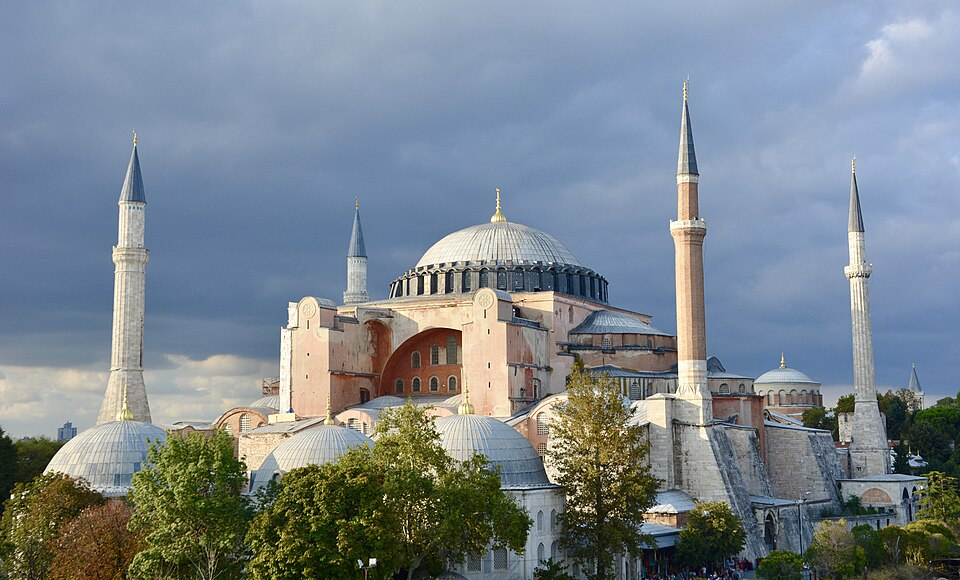
土耳其 · 欧洲 · 圣索菲亚
作者：Adli Wahid
Hagia_Sophia_(228968325).jpeg · CC BY-SA 3.0
N 41.0136° E 28.9550°；城市参考位置。原照片未改写，页面与视频以等比裁切展示。
丹麦 · 欧洲 · 新港
作者：European Commission
The_Nyhavn_Canal_3.jpg · CC BY 4.0
N 55.6761° E 12.5683°；城市参考位置。原照片未改写，页面与视频以等比裁切展示。
瑞典 · 欧洲 · 斯德哥尔摩市政厅
作者：Julian Herzog (Website)
Stockholms_Stadshuset_City_Hall_Stockholm_2016_01.jpg · CC BY 4.0
N 59.3294° E 18.0686°；城市参考位置。原照片未改写，页面与视频以等比裁切展示。
挪威 · 欧洲 · 奥斯陆歌剧院
作者：Pierre Blaché
Oslo_Opera_House_-_2025.jpg · CC0
N 59.9133° E 10.7389°；城市参考位置。原照片未改写，页面与视频以等比裁切展示。
芬兰 · 欧洲 · 赫尔辛基大教堂
作者：Manster323
N 60.1708° E 24.9375°；城市参考位置。原照片未改写，页面与视频以等比裁切展示。
冰岛 · 欧洲 · 哈尔格林姆教堂
作者：Steinninn
Hallgrimskirkja_mai_2026.jpg · CC BY 4.0
N 64.1458° W 21.9425°；城市参考位置。原照片未改写，页面与视频以等比裁切展示。
爱尔兰 · 欧洲 · 半便士桥
作者：See original file description
HalfPennyBridge.jpg · Public domain
N 53.3500° W 6.2603°；城市参考位置。原照片未改写，页面与视频以等比裁切展示。
英国 · 欧洲 · 爱丁堡城堡
作者：Enric
City_of_Edinburgh_-_Edinburgh_Castle_-_20140421004403.jpg · CC BY-SA 4.0
N 55.9533° W 3.1892°；城市参考位置。原照片未改写，页面与视频以等比裁切展示。
瑞士 · 欧洲 · 苏黎世大教堂
作者：Roland zh
Grossmünster_-_Münsterhof_2014-05-23_12-08-43.JPG · CC BY-SA 3.0
N 47.3744° E 8.5411°；城市参考位置。原照片未改写，页面与视频以等比裁切展示。
瑞士 · 欧洲 · 卡佩尔桥
作者：Simon Koopmann
Kapellbruecke.JPG · CC BY-SA 2.5
N 47.0500° E 8.3000°；城市参考位置。原照片未改写，页面与视频以等比裁切展示。
波兰 · 欧洲 · 文化科学宫
作者：Adrian Grycuk
Pałac_Kultury_i_Nauki_2019.jpg · CC BY-SA 3.0 pl
N 52.2300° E 21.0111°；城市参考位置。原照片未改写，页面与视频以等比裁切展示。
波兰 · 欧洲 · 瓦维尔城堡
作者：Monika Towiańska
N 50.0614° E 19.9372°；城市参考位置。原照片未改写，页面与视频以等比裁切展示。
爱沙尼亚 · 欧洲 · 亚历山大涅夫斯基大教堂
作者：Diego Delso
Catedral_de_Alejandro_Nevsky,_Tallin,_Estonia,_2012-08-11,_DD_46.JPG · CC BY-SA 3.0
N 59.4372° E 24.7453°；城市参考位置。原照片未改写，页面与视频以等比裁切展示。
埃及 · 非洲 · 穆罕默德阿里清真寺
作者：Ahmed Ragheb 97
جامع_محمد_علي.JPG · CC BY-SA 3.0
N 30.0444° E 31.2358°；城市参考位置。原照片未改写，页面与视频以等比裁切展示。
埃及 · 非洲 · 凯特贝城堡
作者：Hmkree
قلعة_قايتباي_من_الجو.jpg · CC BY-SA 4.0
N 31.1975° E 29.8925°；城市参考位置。原照片未改写，页面与视频以等比裁切展示。
摩洛哥 · 非洲 · 库图比亚清真寺
作者：Rol1000
Marokko0112_(retouched).jpg · CC BY-SA 4.0
N 31.6300° W 8.0089°；城市参考位置。原照片未改写，页面与视频以等比裁切展示。
摩洛哥 · 非洲 · 哈桑二世清真寺
作者：Walaadari
Maroc,_Mosquée_Hassan_2,_Grand_Casablanca_2.jpg · CC BY-SA 4.0
N 33.5333° W 7.5833°；城市参考位置。原照片未改写，页面与视频以等比裁切展示。
突尼斯 · 非洲 · 宰图纳清真寺
作者：T A
Minaret_et_patio_de_la_mosquée_Zitouna_au_centre_de_la_Médina_de_Tunis.jpg · CC BY-SA 2.0
N 36.8064° E 10.1817°；城市参考位置。原照片未改写，页面与视频以等比裁切展示。
阿尔及利亚 · 非洲 · 烈士纪念碑
作者：Boumediene15
Martyrs_Memorial._Algiers,_Algeria.jpg · CC BY-SA 3.0
N 36.7325° E 3.0872°；城市参考位置。原照片未改写，页面与视频以等比裁切展示。
南非 · 非洲 · 希尔布罗塔
作者：Thuvack
Hillbrow_Tower-1.jpg · CC BY-SA 3.0
S 26.2044° E 28.0456°；城市参考位置。原照片未改写，页面与视频以等比裁切展示。
肯尼亚 · 非洲 · 肯雅塔国际会议中心
作者：Original uploader was Mkimemia at en.wikipedia
KICC_nairobi_kenya.jpg · CC BY-SA 3.0
S 1.2864° E 36.8172°；城市参考位置。原照片未改写，页面与视频以等比裁切展示。
肯尼亚 · 非洲 · 耶稣堡
作者：Maingi030
Fort_Jesus_at_the_Mombasa_Island.jpg · CC BY-SA 4.0
S 4.0500° E 39.6667°；城市参考位置。原照片未改写，页面与视频以等比裁切展示。
埃塞俄比亚 · 非洲 · 圣三一大教堂
作者：Gize12
Addis_Ababa_Ethiopia_2.jpg · CC BY-SA 4.0
N 9.0358° E 38.7525°；城市参考位置。原照片未改写，页面与视频以等比裁切展示。
塞内加尔 · 非洲 · 非洲复兴纪念碑
作者：Gromane
African_Renaissance_Monument_Dakar_2025.jpg · CC0
N 14.6928° W 17.4467°；城市参考位置。原照片未改写，页面与视频以等比裁切展示。
加纳 · 非洲 · 黑星门
作者：George Appiah
Independence_Arch_-_Accra,_Ghana1.jpg · CC BY 2.0
N 5.5500° W 0.2000°；城市参考位置。原照片未改写，页面与视频以等比裁切展示。
尼日利亚 · 非洲 · 莱基伊科伊大桥
作者：S.aderogba
Lekki-link-bridge--full-view2.jpg · CC BY-SA 4.0
N 6.4561° E 3.3936°；城市参考位置。原照片未改写，页面与视频以等比裁切展示。
卢旺达 · 非洲 · 基加利会议中心
作者：Emmanuelkwizera
An_aerial_of_Kigali_Convention_Center_on_June_19,_2019._Photo_by_Emmanuel_Kwizera.jpg · CC BY-SA 4.0
S 1.9525° E 30.1150°；城市参考位置。原照片未改写，页面与视频以等比裁切展示。
马达加斯加 · 非洲 · 安塔那那利佛王宫
作者：Hery Zo Rakotondramanana
Reconstructed_Rova_Antananarivo_Madagascar.jpg · CC BY-SA 2.0
S 18.9100° E 47.5250°；城市参考位置。原照片未改写，页面与视频以等比裁切展示。
美国 · 北美洲 · 金门大桥
作者：Frank Schulenburg
Golden_Gate_Bridge_as_seen_from_Battery_East.jpg · CC BY-SA 4.0
N 37.7775° W 122.4164°；城市参考位置。原照片未改写，页面与视频以等比裁切展示。

美国 · 北美洲 · 格里菲斯天文台
作者：Matthew Field
Griffith_observatory_2006.jpg · CC BY 2.5
N 34.0500° W 118.2500°；城市参考位置。原照片未改写，页面与视频以等比裁切展示。
美国 · 北美洲 · 威利斯大厦与城市天际线
作者：Space-Age Meat
Chicago_From_the_Hancock_Tower_at_Sunset.jpg · CC BY-SA 4.0
N 41.8819° W 87.6278°；城市参考位置。原照片未改写，页面与视频以等比裁切展示。
美国 · 北美洲 · 美国国会大厦
作者：Martin Falbisoner
US_Capitol_east_side.JPG · CC BY-SA 3.0
N 38.9047° W 77.0164°；城市参考位置。原照片未改写，页面与视频以等比裁切展示。
美国 · 北美洲 · 海关大楼钟塔
作者：Dismas
Custom_House_Tower.jpg · CC BY-SA 2.5
N 42.3603° W 71.0578°；城市参考位置。原照片未改写，页面与视频以等比裁切展示。
美国 · 北美洲 · 太空针塔
作者：Jordon Kalilich
Space_Needle_2011-07-04.jpg · Public domain
N 47.6039° W 122.3300°；城市参考位置。原照片未改写，页面与视频以等比裁切展示。
美国 · 北美洲 · 海湾市场
作者：Sharon Hahn Darlin
Bayside,_Miami,_Florida_June_2021_-_03.jpg · CC BY 2.0
N 25.7742° W 80.1936°；城市参考位置。原照片未改写，页面与视频以等比裁切展示。
美国 · 北美洲 · 欢迎来到拉斯维加斯
作者：Thomas Wolf, www.foto-tw.de
Welcome_to_Fabulous_Las_Vegas.jpg · CC BY-SA 3.0
N 36.1692° W 115.1406°；城市参考位置。原照片未改写，页面与视频以等比裁切展示。
加拿大 · 北美洲 · 加拿大广场
作者：Nicolas Untz
Canada_Place_Landing.jpg · CC BY-SA 2.0
N 49.2608° W 123.1139°；城市参考位置。原照片未改写，页面与视频以等比裁切展示。
加拿大 · 北美洲 · 加拿大国家电视塔
作者：Fabian Roudra Baroi
CN_Tower_at_Toronto_04.jpg · CC BY-SA 4.0
N 43.6525° W 79.3817°；城市参考位置。原照片未改写，页面与视频以等比裁切展示。
加拿大 · 北美洲 · 芳堤娜城堡
作者：Bernard Gagnon
Château_Frontenac_02.jpg · CC BY-SA 4.0
N 46.8139° W 71.2081°；城市参考位置。原照片未改写，页面与视频以等比裁切展示。
墨西哥 · 北美洲 · 艺术宫
作者：Xavier Quetzalcoatl Contreras Castillo
Bellas_Artes_01.jpg · CC BY-SA 3.0
N 19.4333° W 99.1333°；城市参考位置。原照片未改写，页面与视频以等比裁切展示。
古巴 · 北美洲 · 哈瓦那国会大厦
作者：Nigel Pacquette
El_Capitolio_Havana_Cuba.jpg · CC BY-SA 3.0
N 23.1367° W 82.3589°；城市参考位置。原照片未改写，页面与视频以等比裁切展示。
巴拿马 · 北美洲 · 生物多样性博物馆
作者：user:ArnoldReinhold
Biomuseo_rear_stereo_pair_R.agr_(cropped).jpg · CC BY-SA 4.0
N 8.9711° W 79.5347°；城市参考位置。原照片未改写，页面与视频以等比裁切展示。
哥斯达黎加 · 北美洲 · 哥斯达黎加国家剧院
作者：Andres Alvarez
Costa_Rica-Teatro_Nacional.JPG · CC BY-SA 3.0
N 9.9325° W 84.0800°；城市参考位置。原照片未改写，页面与视频以等比裁切展示。
阿根廷 · 南美洲 · 布宜诺斯艾利斯方尖碑
作者：Rodrigo Paredes from Ciudad Autónoma de Buenos Aires, Argentina
Buenos_Aires_(20234294752).jpg · CC BY 2.0
S 34.6039° W 58.3814°；城市参考位置。原照片未改写，页面与视频以等比裁切展示。
巴西 · 南美洲 · 圣保罗大教堂
作者：Wilfredor
Catedral_da_Sé_em_São_Paulo.jpg · CC0
S 23.5500° W 46.6333°；城市参考位置。原照片未改写，页面与视频以等比裁切展示。
巴西 · 南美洲 · 巴西利亚大教堂
作者：Tissiana de A. de Souza
Catedral_Metropolitana_de_Brasilia.jpg · CC BY-SA 4.0
S 15.7939° W 47.8828°；城市参考位置。原照片未改写，页面与视频以等比裁切展示。
巴西 · 南美洲 · 拉塞尔达升降机
作者：Paul R. Burley
Elevador_Lacerda_7610.jpg · CC BY-SA 4.0
S 12.9747° W 38.4767°；城市参考位置。原照片未改写，页面与视频以等比裁切展示。
秘鲁 · 南美洲 · 利马主教座堂
作者：Gatodemichi
Catedral_de_Limaa1.jpg · CC BY-SA 4.0
S 12.0600° W 77.0375°；城市参考位置。原照片未改写，页面与视频以等比裁切展示。
秘鲁 · 南美洲 · 库斯科大教堂
作者：PoolPs
Catedral_de_la_ciudad_del_Cusco.jpg · CC BY-SA 4.0
S 13.5169° W 71.9786°；城市参考位置。原照片未改写，页面与视频以等比裁切展示。
智利 · 南美洲 · 圣地亚哥大塔
作者：javier
Costanera_Center_at_evening_(cropped).jpg · CC BY 2.0
S 33.4375° W 70.6500°；城市参考位置。原照片未改写，页面与视频以等比裁切展示。
智利 · 南美洲 · 瓦尔帕莱索历史城区
作者：Julia Sumangil
Historic_Quarter_of_the_Seaport_City_of_Valparaíso_04.jpg · CC BY-SA 4.0
S 33.0461° W 71.6197°；城市参考位置。原照片未改写，页面与视频以等比裁切展示。
哥伦比亚 · 南美洲 · 蒙塞拉特山
作者：Felipe Restrepo Acosta
2017_Bogotá_Basílica_del_Señor_Caído_de_Monserrate.jpg · CC BY-SA 4.0
N 4.7111° W 74.0722°；城市参考位置。原照片未改写，页面与视频以等比裁切展示。
哥伦比亚 · 南美洲 · 圣费利佩城堡
作者：Martin St-Amant (S23678)
62_-_Carthagène_-_Décembre_2008.jpg · CC BY-SA 3.0
N 10.4000° W 75.5000°；城市参考位置。原照片未改写，页面与视频以等比裁切展示。
厄瓜多尔 · 南美洲 · 国家誓言圣殿
作者：Samuelistok
El_Voto_Nacional_._Quito,_Ecuador.JPG · CC BY-SA 4.0
S 0.2200° W 78.5125°；城市参考位置。原照片未改写，页面与视频以等比裁切展示。
乌拉圭 · 南美洲 · 萨尔沃宫
作者：Coolcaesar
Palaciosalvouruguay.jpg · CC BY-SA 3.0
S 34.9056° W 56.1842°；城市参考位置。原照片未改写，页面与视频以等比裁切展示。
玻利维亚 · 南美洲 · 圣弗朗西斯科教堂
作者：Parallelepiped09
Basílica_Menor_Nuestra_Señora_de_los_Ángeles_(San_Francisco).jpg · CC BY-SA 4.0
S 16.4958° W 68.1333°；城市参考位置。原照片未改写，页面与视频以等比裁切展示。
澳大利亚 · 大洋洲 · 弗林德斯街车站
作者：Created by Philip Mallis in 2021; cropped by HappyWaldo
Flinders_Station_and_trams.jpg · CC BY-SA 3.0
S 37.8142° E 144.9631°；城市参考位置。原照片未改写，页面与视频以等比裁切展示。
澳大利亚 · 大洋洲 · 故事桥
作者：MagpieShooter
BNE-StoryBridge-fromCityCat.jpg · CC BY-SA 3.0
S 27.4678° E 153.0281°；城市参考位置。原照片未改写，页面与视频以等比裁切展示。
澳大利亚 · 大洋洲 · 伊丽莎白码头
作者：File:Elizabeth Quay June 2018.jpg: Nick-D derivative work: Georgfotoart
Elizabeth_Quay_June_2018_b.jpg · CC BY-SA 3.0
S 32.0000° E 115.9000°；城市参考位置。原照片未改写，页面与视频以等比裁切展示。
新西兰 · 大洋洲 · 天空塔
作者：QFSE Media
01_Auckland_New_Zealand-1000137.jpg · CC BY-SA 3.0 nz
S 36.8492° E 174.7653°；城市参考位置。原照片未改写，页面与视频以等比裁切展示。
新西兰 · 大洋洲 · 惠灵顿缆车
作者：Takeshi Aida from Hong Kong, Hong Kong
Wellington_Cable_Car_(20240206a)_(53532605708).jpg · CC BY-SA 2.0
S 41.2889° E 174.7772°；城市参考位置。原照片未改写，页面与视频以等比裁切展示。
斐济 · 大洋洲 · 苏瓦海港
作者：Maksym Kozlenko
Suva,_Fiji_77.jpg · CC BY-SA 4.0
S 18.1416° E 178.4419°；城市参考位置。原照片未改写，页面与视频以等比裁切展示。
巴布亚新几内亚 · 大洋洲 · 莫尔兹比港城市景观
作者：MSchlauch
Port_Moresby_Town2_Mschlauch.jpg · Public domain
S 9.4789° E 147.1494°；城市参考位置。原照片未改写，页面与视频以等比裁切展示。